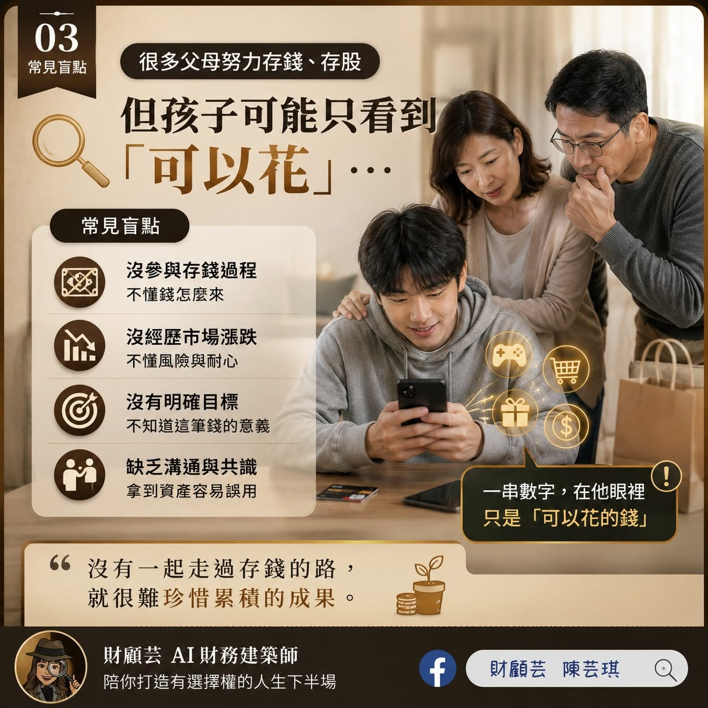
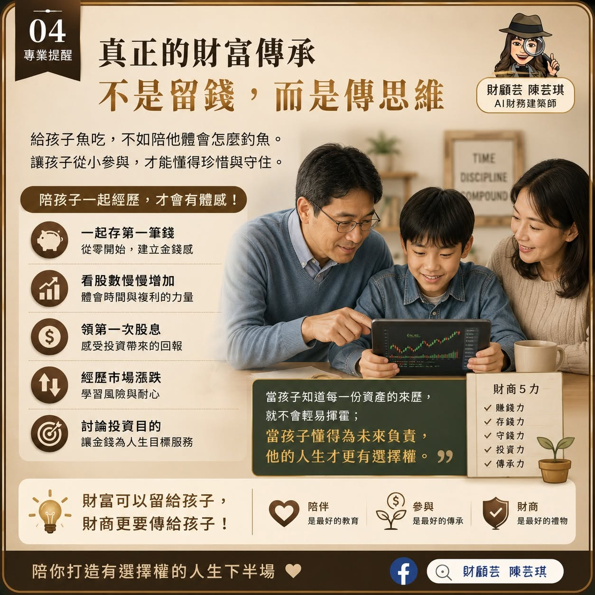

真正令人擔心的，不只是19萬元
一筆250元、500元的付款，看起來都不算巨大。但當付款變成一次又一次的點擊，小額支出也可能在沒有察覺時累積成難以承受的數字。
值得留意的，不只是帳戶歸零，而是孩子是否已經失去對金錢流出的感受：沒有看見現金離開，沒有感覺手上的錢變少，消費只剩下一個按鈕。
數位支付越方便，越需要建立金錢體感
刷卡、手機支付與線上購物，讓生活更方便，也讓花錢的過程變得抽象。當孩子只看到帳戶裡的一串數字，卻沒有經歷存錢的時間與取捨，就不容易理解每一筆資產背後的付出。

父母努力累積，孩子看到的可能只是一串數字
許多父母替孩子存紅包、存股或定期定額買ETF，希望成年時交給孩子一份更好的起點。這份心意很珍貴；但如果孩子從未參與累積過程，他可能不知道這筆錢如何存下來，也不知道市場下跌時為什麼仍要耐心等待。
一筆突然出現的資產，很容易被理解為「可以花的錢」；一段共同走過的累積過程，才有機會成為能被珍惜的成果。

真正的財富傳承，也包含面對金錢的能力
財商教育不必等孩子長大。可以從第一筆存款、第一次設定目標、第一次看見股數增加開始；也可以陪孩子經歷市場漲跌、理解風險與報酬，知道金錢不是憑空出現，而是時間、工作與選擇累積而來。
從生活裡，陪孩子練習五件事
聊收入、支出、目標與夢想，讓金錢成為可以討論的生活議題。
設定小目標，讓孩子看見累積與等待帶來的成就感。
從小額開始理解風險、報酬與市場波動，不把投資當成快速致富。
從生活中的品牌與簡單財報，認識公司如何經營與創造價值。
讓金錢服務人生目標，而不只是被消費帶著走。
留下一筆錢，也留下守住錢的能力
一筆現金或一份資產，能改變孩子的起點；理解賺錢、存錢、守錢與讓資產成長的能力，才可能陪伴他走得更久。
最好的傳承，不一定是在成年那天一次交出所有安排，而是在成長過程中，讓孩子慢慢看懂每一筆資產的來處、用途與責任。
如果準備一份成年禮
會想留給孩子一筆現金、一間房子，還是一套能受用一生的財商思維？答案不必只有一個，但越早開始對話，孩子越有機會把資產變成選擇，而不是壓力。
把金錢的對話，放進一起玩的時光裡
從一場遊戲，慢慢認識金錢
孩子不需要一下子懂得投資，也不必急著學會存很多錢。從一次選擇、一次交換、一次討論「想要」和「需要」開始，就能慢慢看見金錢和生活的關係。
想把這些對話變成親子一起參與的時光，親子財商桌遊理財課會從生活情境與遊戲任務出發，陪孩子練習思考、選擇與分享。
認識親子財商桌遊理財課把照顧、退休與想留給家人的事放在同一張圖上看。